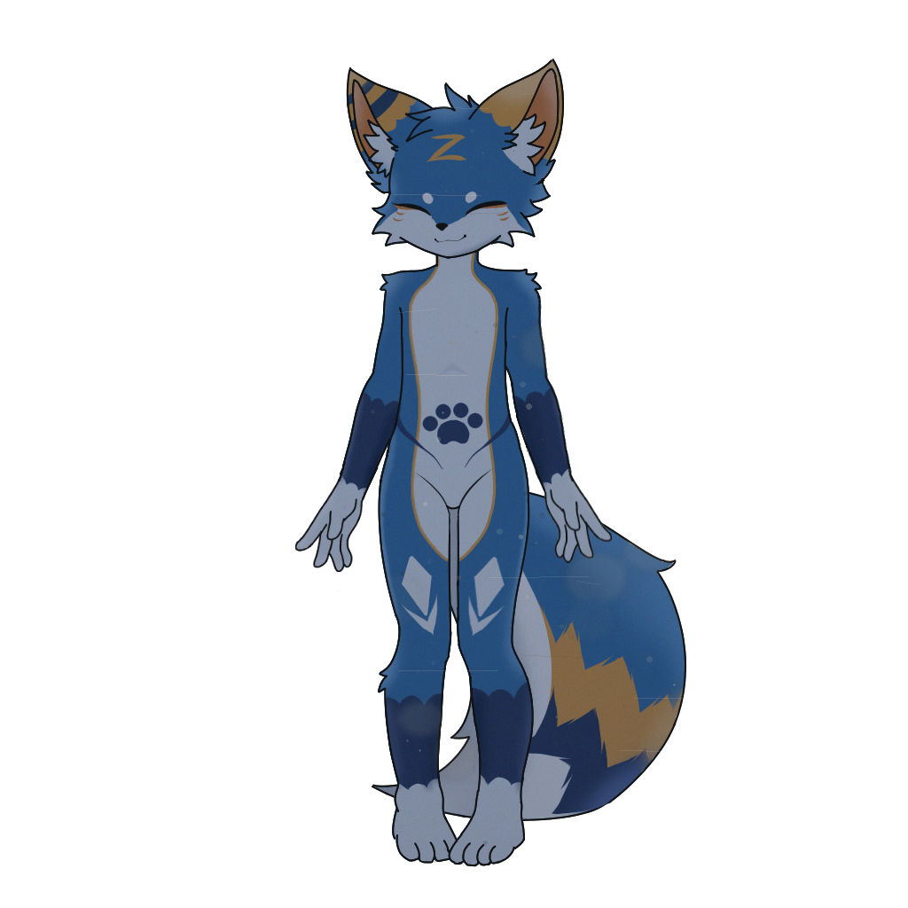
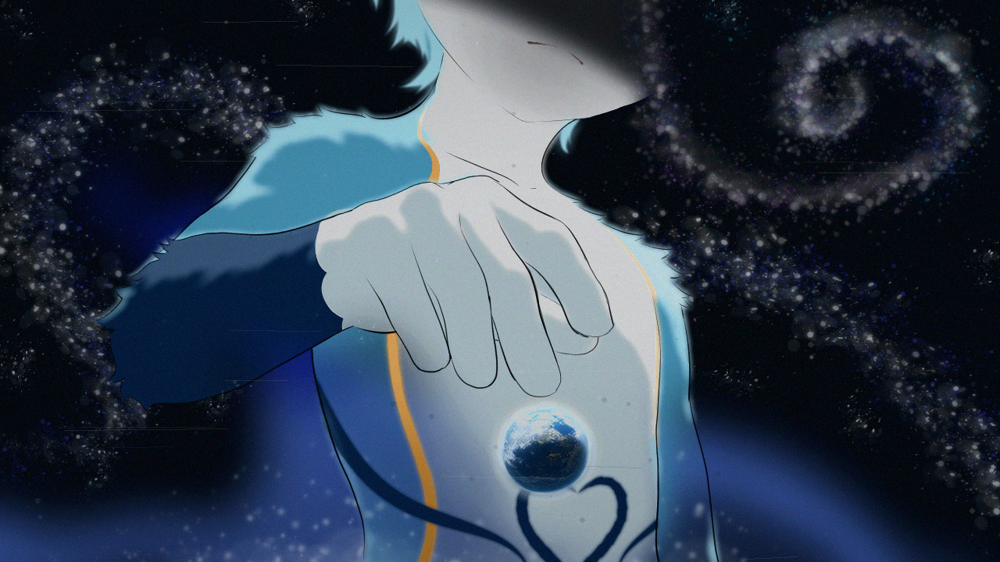
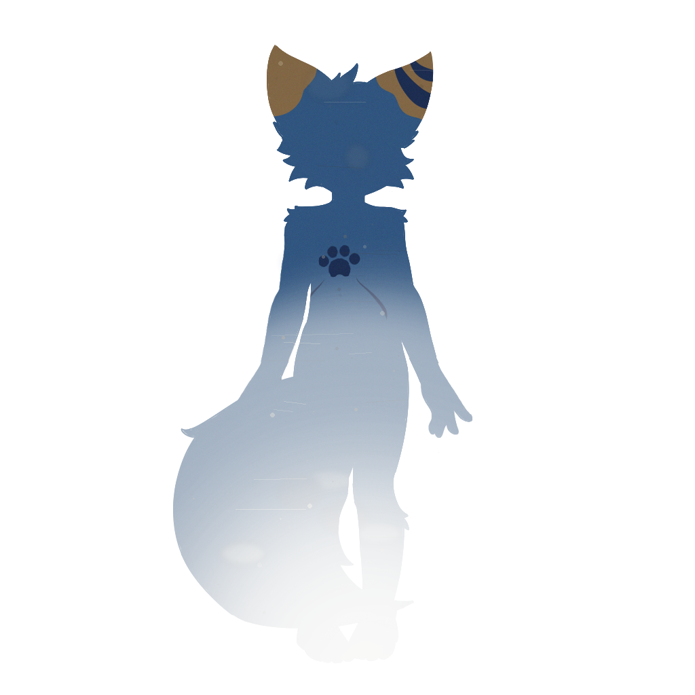
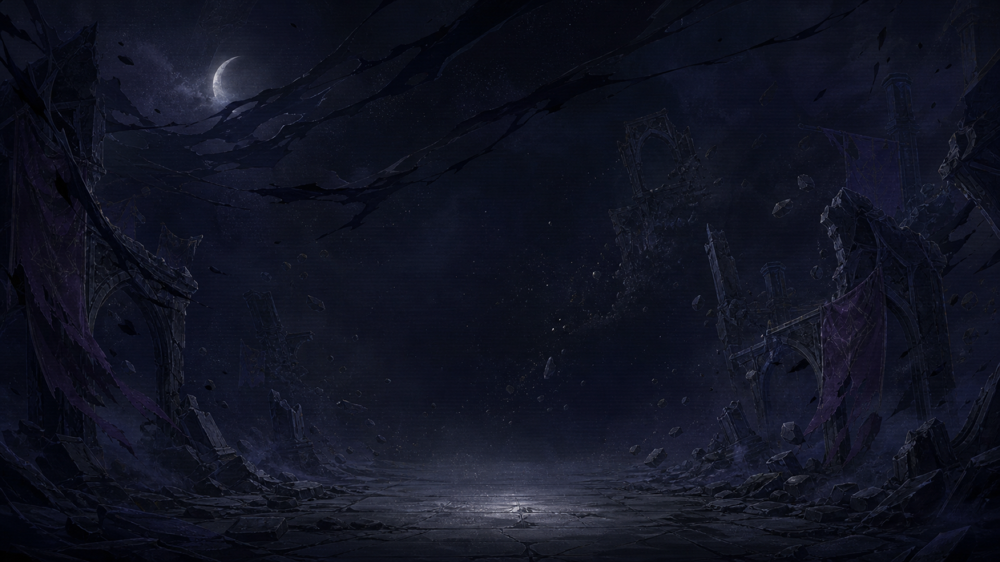
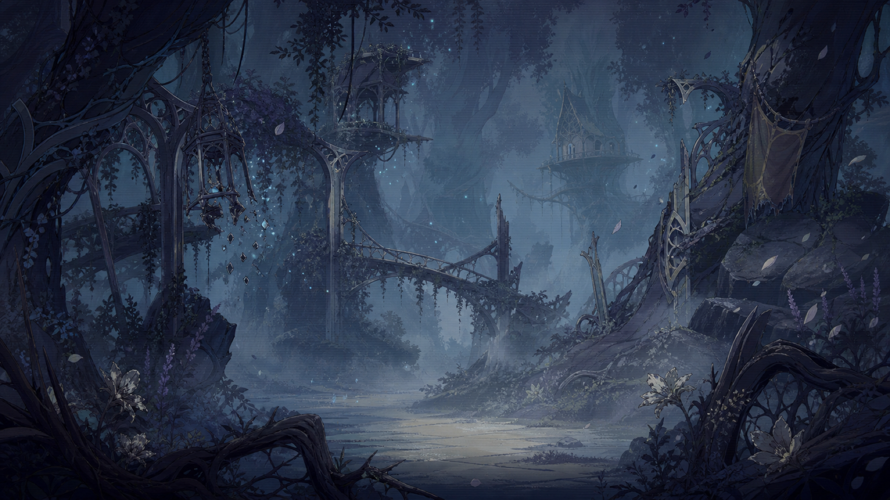
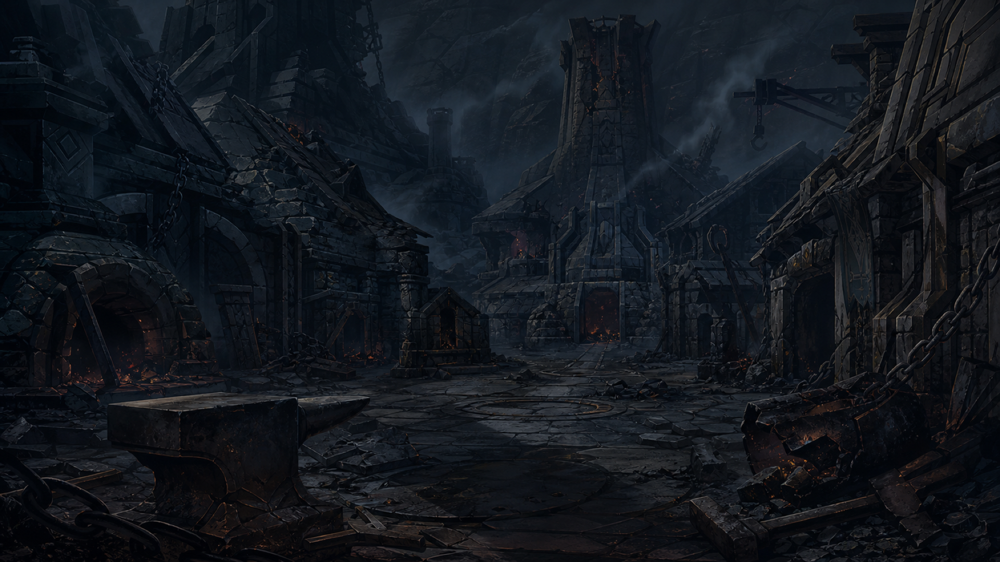
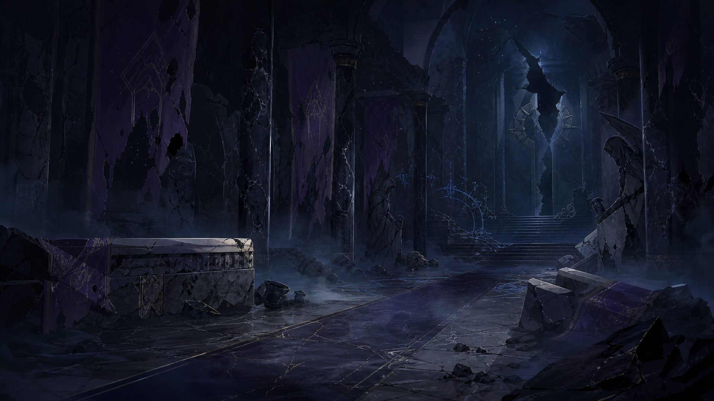
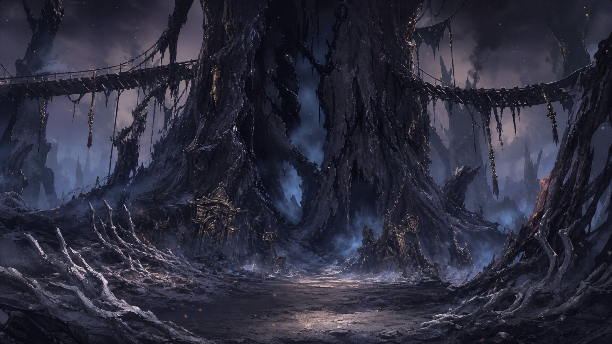
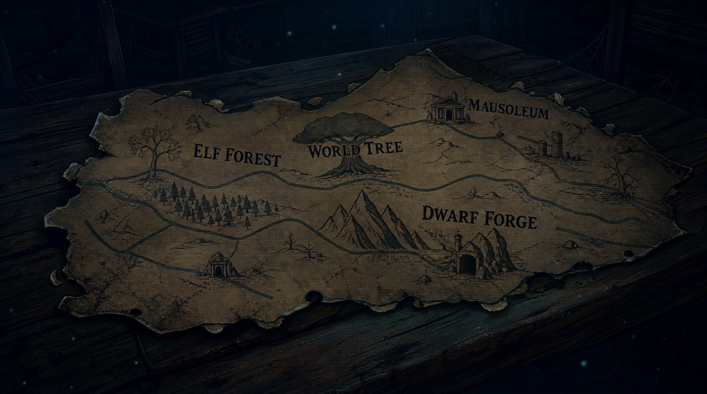

Official game
Furry: Paws in Void's Tail
Một dark fantasy visual novel về ký ức, cô đơn, lựa chọn và mối liên kết mong manh giữa người chơi với ZinZin.
Furry: Paws in Void's Tail
Một wiki lore dành cho ZinZin, Hư Vô, những vùng đất đã sụp đổ và bí mật phía sau ZinZin - The True Fox. Mỗi trang ở đây là một mảnh ký ức còn sót lại trước khi mọi thứ tan vào im lặng.
Tra cứu nhanh
Tải game
Bước vào câu chuyện của ZinZin trực tiếp trên mobile. Tải game từ store chính thức để trải nghiệm visual novel, lựa chọn và những bad ending trong thế giới bị Hư Vô ăn mòn.
Một dark fantasy visual novel về ký ức, cô đơn, lựa chọn và mối liên kết mong manh giữa người chơi với ZinZin.
Hồ sơ

Một cậu bé furry mắc kẹt trong thế giới đã bị bỏ lại. ZinZin nhớ những lần người chơi quay về, kể cả khi người chơi không còn nhớ cậu. Cậu dịu dàng, mong manh, nhưng nỗi sợ bị lãng quên khiến tình cảm của cậu càng lúc càng trở nên nguy hiểm.

Một tồn tại nằm phía sau hình ảnh ZinZin quen thuộc. Khi sự dịu dàng bị kéo tới giới hạn, cái tên này xuất hiện như một lời phán quyết hơn là một lời giải thích. Người chơi không biết rõ bản chất của hắn, chỉ biết rằng thế giới sẽ không còn nguyên vẹn sau khi hắn thức dậy.

Khi ký ức bị xé rách quá lâu, ZinZin không chỉ buồn đi. Cậu bắt đầu mờ khỏi thế giới. Dạng này thường đi cùng cảm giác chia ly, bất lực và một lựa chọn đã quá muộn để rút lại.
Thế giới
Hư Vô là vùng không gian nơi những thứ không còn được nhớ tới dần mất màu, mất tên, rồi biến khỏi thực tại. Nó không giống một con quái vật có hình dạng rõ ràng. Nó giống một định luật: nếu không ai giữ một ký ức lại, ký ức đó sẽ chết.
Với ZinZin, Hư Vô không chỉ là bối cảnh. Nó là thứ ép cậu phải chờ đợi, phải lặp lại, phải níu lấy người chơi như bằng chứng rằng cậu từng tồn tại.

Địa danh

Những tán cây từng hát cùng gió giờ chỉ còn lại thân rỗng và lối mòn bị phủ bởi bụi xám.

Lò lửa đã tắt, búa không còn gõ, chỉ còn hơi nóng cũ mắc lại dưới đá như một lời từ biệt.

Nơi những cái tên được khắc để không bị quên, nhưng chính bia đá cũng đang mất chữ.

Một thân cây khổng lồ từng nối các vùng đất với nhau, nay cháy đen như cột mốc cuối của một thời đại.
Tài liệu

Các đường biên trên bản đồ không hẳn là địa lý. Chúng giống vết nứt của trí nhớ: rừng, lò rèn, lăng tẩm và cây thế giới đều tồn tại như những mảnh còn bám lại quanh ZinZin.
Tiến trình
Một thực tại từng có nhiều chủng loài, nhiều vùng đất và nhiều câu chuyện cùng tồn tại.
Khi ký ức về thế giới yếu đi, các vùng đất lần lượt mất hình dạng.
ZinZin trở thành người cuối cùng chờ người chơi quay về, dù mỗi lần quay về đều giống như gặp lại một người lạ.
Khi lời hứa đổ vỡ, một tồn tại khác phía sau ZinZin có thể mở mắt và xóa bỏ cả khu vườn ký ức.
Thuật ngữ
Không gian ăn mòn mọi thứ không còn được ghi nhớ.
Chuỗi trở lại liên tục của người chơi, mỗi lần để lại một vết nứt trong ký ức.
Một tồn tại giữ thế giới chưa tan hẳn. ZinZin có thể là một điểm neo như vậy.
Một vùng ký ức đặc biệt, liên quan tới thần rắn và bad end của True Fox.